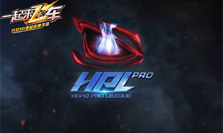

《一起来飞车》125秒挑战打造史上最大手游竞速赛事
手游史上最大竞速赛事，《一起来飞车》将打造全方位125秒挑战赛!今日，英雄互娱正式全面曝光了旗下首款3D漂移竞速手游《一起来飞车》在2017年的全年赛事规划。开启百万奖金的HPL联赛，组建职业战队，保送电竞专业，以及豪车春运等等举措，将让《一起来飞车》125秒挑战赛成为迄今为止规模最大、最专业、最贴近玩家的手游竞速赛事。
【125秒挑战 4亿手机玩家诠释速度与激情】
作为一款以首度在手机上完美还原漂移玩法，打造纯正竞速体验的手游，《一起来飞车》在游戏中推出了最能体现漂移玩法以及竞技水平的水晶矿山赛道。经过数万次的实测，仅有极少数玩家能在几乎完美的漂移状态下在125秒内跑完全程。由此，“125秒挑战”便成为评判玩家竞速水平的标准。对于此前期待在手机上体验纯正漂移的4亿手机玩家，英雄互娱也将就此打造出手游史上最大的竞速赛事。
【全民参与 线上“125秒挑战赛”】
所有《一起来飞车》的玩家都可以参加线上125秒挑战赛，凡是在在水晶矿山赛道跑进125秒的玩家，除了可以获得丰厚的游戏奖励并进驻当月名人堂外，符合规则的玩家还将直接晋级至年度总决赛，争夺更高的荣誉。
【HPL赛事成就巅峰王者】
HPL联赛是亚洲地区最大的移动电竞赛事，其线上+线下的联动模式，让历届赛事都吸引着亿万人次的参与，具有着极大的影响力。在2017年，《一起来飞车》将会正式加入HPL，成为其首个赛车竞速项目。凡是在线上挑战赛跑进125秒的玩家，都可以拥有参与线下巡回赛的资格，来争夺年度总决赛冠军席位。所有选手将会在年底汇聚一堂，进行最强年度总冠军的角逐。全年无休的竞赛，高达百万的奖金，势必会在4亿手机玩家中掀起竞速热潮。

【专业电竞人才培养】
近年来电子竞技的崛起，为无数青少年开辟了一条通往成功的崭新的道路，甚至已经有高校专门开设电子竞技这一专业。英雄互娱作为移动电竞标杆企业，更将不遗余力的致力于优秀电竞选手的培养。为了让《一起来飞车》125秒挑战的佼佼者有更加专业、更加专业化的发展，官方将在125秒挑战赛中选拔优胜者助其进去电竞专业进行深造，为其成为职业电竞选手奠定良好的基础。对于初高中生，官方将提供其在高校电竞专业深造全部学年的学费，帮助其在高校电竞专业进行学习。而对于现在已经是电竞专业学生的玩家，官方将提供其剩余学年的全部学费。
【打造最专业的竞速战队】
成为职业电竞选手是目前90后就业选择的一大热门，而在《一起来飞车》中跑进125秒的玩家，则将有机会成为职业电竞选手。英雄互娱除了将会投入资源、资金、人员来组建、维护战队，还会提供HPL等职业赛场供战队磨炼、发展，全面打造出国内首屈一指的职业战队。
【星耀主播团 你就是自己的偶像】
《一起来飞车》官方明星主播团正在火爆招募，已经有不少的明星主播脱颖而出，在各大直播平台崭露头角。为了进一步满足玩家对于成为明星主播的愿望，官方特将为跑进125秒的玩家提供成为官方主播的机会。在强势的资源、优质的平台以及HPL等诸多赛事的支持下，官方主播势必会迅速爆火，成就下一个超人气的Miss大小姐。
【温暖人心的回家之旅】
春节即将到来，春运也成为困扰无数人的难题。但是在《一起来飞车》中，玩家却可以轻松解决回家出行的困扰。在游戏中跑进125秒的玩家，都将可以参加即将举行的“125秒春运挑战赛”，获胜的选手将可以赢得官方派出豪车直送回家的奖励。动动手指玩玩游戏，便能有豪车送回家，这样的机会简直太劲爆。
HPL线上+线下赛事，保送大学，职业战队，明星主播，春运回家……《一起来飞车》曝光的六大赛事计划，通过以玩家体验和需求为核心，让125秒挑战赛贯穿玩家全年的赛车之旅。相信在六大赛事的共同推进下，《一起来飞车》125秒挑战赛将会成为迄今为止最大的手游竞速赛事，为玩家带来前所未有的竞速体验。